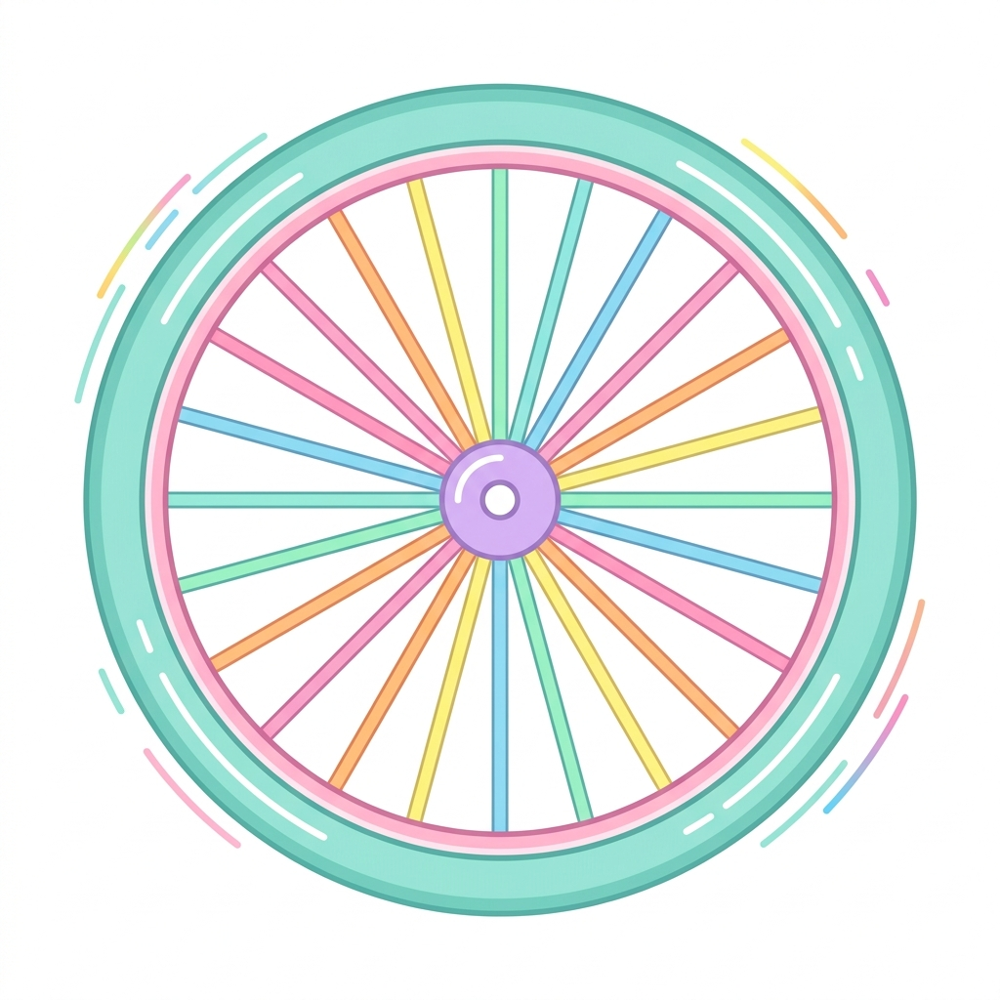

📊 網站數據統計
中語介面
台語介面
41研究室
文本分析助手
1. 輸入文本
2. 分析報告
3. AI 改寫結果
第一步：貼上原文
清除
目標語言
台語 (Taiwanese)
中語 (Mandarin)
統計字距
50
100
150
200
250
500
1000
常用字上限
(中語 5021 基準)
開始文本分析
第二步：分析報告
分析下一個文本
下載分析報表
總字數(A)
:
0
相異字數(B)
:
0
字距範圍
總字數(C)
相異字數(D)
總字數佔全文比 (E=C/A)%
總字數累積比 (F)%
相異字數佔全文比 (G=D/B)%
相異字數累積比 (H)%
字庫查詢 (出現次數)
分析完成！準備好進行 AI 改寫了嗎？
目標長度 (原文的 %)
30%
40%
50%
60%
70%
80%
90%
(約 0 字)
常用字上限 (5021排名)
開始 AI 文本生成
詳細字頻清單
字
出現次數
資料庫序號 (排名)

當咧調用台語腦...
請稍候，我們正在為您產出道地的文本
第三步：AI 生成結果
返回分析報告
分析下一個文本
下載文本
📊 網站數據統計
開始分析文本
累積造訪人次
--
最近分析動態